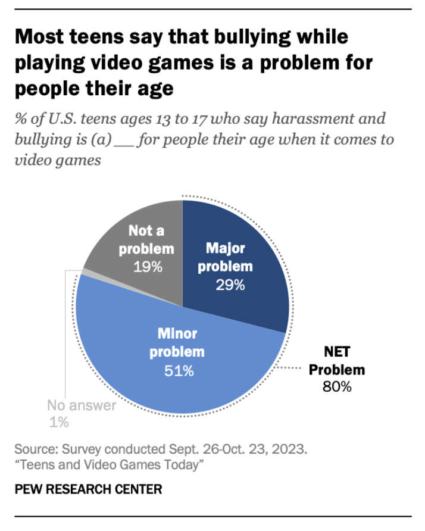

It is important to know what goes into the apps that you and your children use everyday. The algorithms and designs that go into mobile applications are often unexplained to the average user. Various unexplained parts of apps can include how content is chosen to be shown to the user, how endlessly scrolling works, and how free mobile games make their money. Not all practices in the industry are predatory or harmful, but there may be a few that you should look out for. When interacting with a new app, a person who does not have an extensive background in software design should be able to recognize certain practices or algorithms in order to make the best decision going forward in using said app. Our goal is to showcase the data and statistics on phone usage, as well as the design elements that are potential risks to you and your family.
According to the Interaction Design Foundation, infinite scrolling is defined as "an interaction design pattern in which a page loads content as the user scrolls down, allowing the user to explore a large amount of content with no distinct end"
Furthermore, they state that "While infinite scrolling increases time spent on sites, it is also responsible for creating addictive experiences. After public outcry on the addictive design practices of social media applications, Instagram and YouTube have implemented settings to limit users’ time on the application"
Data and visuals from the Pew Research Center. Image source: Jeffrey Gottfried and Olivia Sidoti, 2024. Accessed via the Pew Research Center website